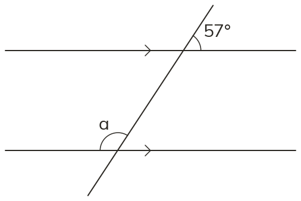
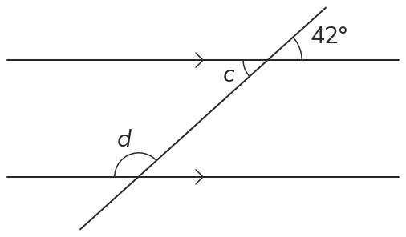
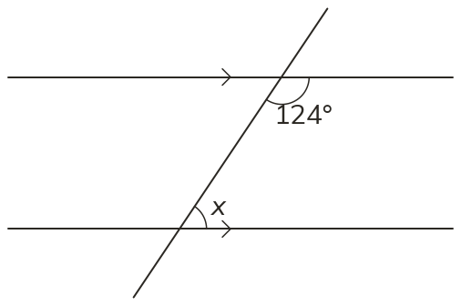
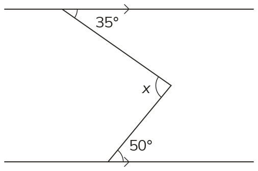

Westonbirt Maths · Parallel Lines and Quadrilaterals
Angles in Parallel Lines
Name: ______________________ Date: ____________
1
Find a, giving both reasons.
2
Find c and d, giving a reason for each.
3
Tom says x = 124° because the angles are alternate. Explain his mistake and find x.
Ext
Find x. (Hint: draw a third parallel line through the bend.)



